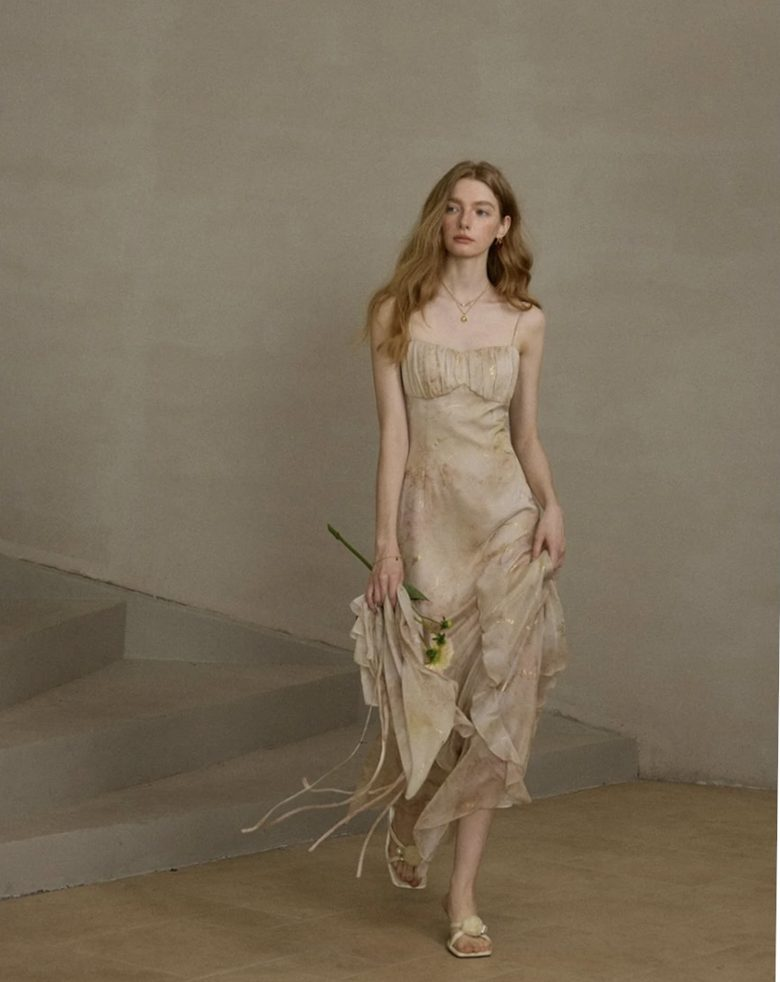

Violinist
Master's student at Juilliard with Catherine Cho, and founding member of the Karuna Quartet.
Nicole has soloed with the Diablo Valley Philharmonic and won first prize at the American Protégé International Concerto Competition at Carnegie Hall.
Karuna Quartet took gold at the 2026 St. Paul String Quartet Competition and made their Alice Tully Hall debut. Her summers go to chamber music, at Aspen, Norfolk, Kent Blossom and Bowdoin.
I believe in thoughtful, individualized instruction that helps each student develop strong technique, musicianship, confidence, and a lasting connection to music.
Nicole has taught students in New York City and Australia, including students enrolled in Juilliard Pre-College and the Mannes School of Music. She has also served as a Violin Sectional Coach for the Juilliard Pre-College Orchestra. She emphasizes efficient practice strategies, giving her students the tools to practice confidently and independently.
Inquire about lessons